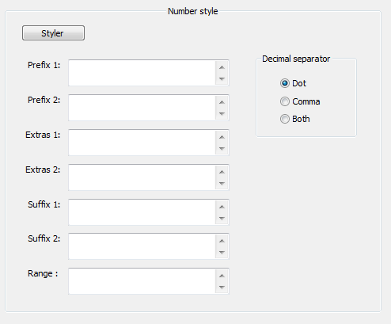
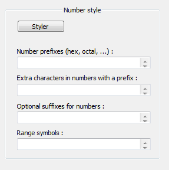

UDL > Numbers
This section describes new options user have when defining numbers.

UDL number panel received major update in Notepad++ version 6.3. If you are using version 6.2, please scroll below.
Number handling is quite different in UDL 2.1 than it was in UDL 1.0 (or UDL 2.0).
New interface and logical organization of code designed by CChris was used in version 2.0, and user suggestions lead to improvements and extensions in version 2.1. Let’s break it down, feature by feature.
Decimal digits
Are supported automatically by UDL.
0123456789
123
987
Number prefixes 1
Allows to define number prefixes that will be used with decimal digits only:
B1011
O12345670
D1234567890
Number prefixes 2
Allows to define number prefixes that will be used with decimal digits and extended with Extras1:
0x1234567890ABCDEF
- This will be mostly used for hex prefixes.
- Note that even standard C/C++ prefix “0x” must be defined here, as it is not supported by default.
Extra characters 1
If you define “0x” hex prefix in Number prefixes 2, then add here “A B C D E F a b c d e f”
0x1234
0xABC
Extra characters 2
These extra characters are used exactly like Extras1 but Extras2 are used in combination with Suffix1. e.g. “A B C D E F a b c d e f”
Suffix characters 1
Some languages define HEX notifications as a suffix. Let’s use “‘H” as an example:
1234567890ABCDEF'H
ABC'H
123'H
Suffix characters 2
This one works exactly like Prefix1 option, just works from the other end : Let’s use “B O D” as examples:
1011B
01234567O
0123456789D
Or, you can use it for financial records, e.g. 100€ or 200$
Range symbols
Sometimes you want to express number ranges:
100-200
200::300
300-->400
Sum up
- Prefix1 and Suffix2 accept numbers only
- Prefix2 accepts numbers and Extras1
- Suffix1 accepts numbers and Extras2
Also worth noting is the fact that UDL 2.0 restricts numbers to have just one decimal dot (in UDL 1.0 stuff like 1.2.3.4.5.6.7.8.9 was treated as a single number).
UDL 2.1 allows user selection of decimal point character (dot, comma or both).
That’s it with numbers.
Old version, UDL 2.0 (used in Notepad++ v 6.2)

Note: this section is left here for people stuck with old version, if you use newer version, you can safely ignore this section !!!
Number handling is quite different in UDL 2.0 than it was in UDL 1.0. New interface and logical organization of code was designed by CChris. I simply adopted his idea without adding anything to it. I had to significantly change the code to integrate it with UDL 2.0, but I closely followed his superb interface. Let’s break it down, feature by feature.
Number prefixes
This will be mostly used for hex prefixes.
Note that even standard C/C++ prefix “0x” must be defined here, as it is not supported by default.
Extra characters in numbers with prefix
e.g. If you define “0x” hex prefix, then add here “A B C D E F a b c d e f”
Optional sufixes for numbers
This one is useful for financial records, e.g. 100€ or 200$
Range symbols
Sometimes you want to express number ranges:
100-200
200::300
300-->400
Also worth noting is the fact that UDL 2.0 restricts numbers to have just one decimal dot (in UDL 1.0 stuff like 1.2.3.4.5.6.7.8.9 was treated as a single number).
User is restricted to dot character for decimal point. If you need to use comma, please upgrade.
That’s it with numbers. I really think CChris did a great job here, and covered almost anything user might need regarding numbers. If you think something is missing, please state so in discussion on Notepad++ forum.
This page of the User Manual is derived and edited from Ivan Radić's udl-documentation, which he has maintained for Notepad++'s UDL 2.1 since 2015, under the CC BY 4.0 license.